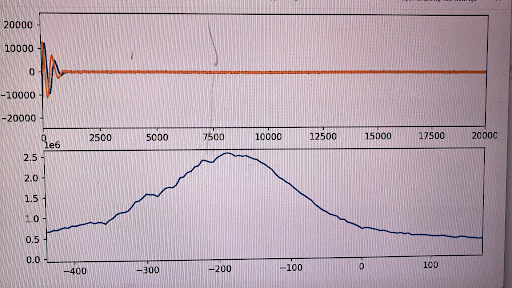
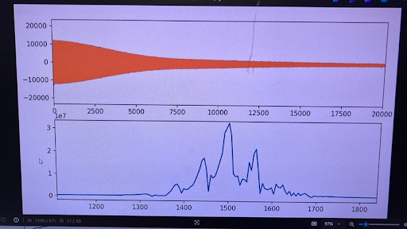

For my PhD research, I've brought up two old and very large electromagnets and converted them for use in NMR.
This magnet was previously owned by the Materials Science and Engineering department, and they were in the process of having it thrown out when I offered to take it off their hands. Because it weighs several tons, moving it from the basement of their building to our building took a while. At one point, the riggers attempted to move the magnet down a ramp by lowering the pallet jack enough that the magnet would drag on the ground and the friction would slow it down, but the magnet escaped and slid down the ramp on its own! On top of that, the original owners assured me and the staff coordinating the move that it was 2000lbs lighter than the true (6000lb) weight. When the riggers attempted to put it in the freight elevator in our building, the elevator started sinking as soon as the front wheels of the electric pallet jack hit the elevator floor, and they were only just able to pull it back out before we had a major disaster.
In the end, we had to settle for parking it in a dingy loading dock in a building near our own. I scavenged an old HP equipment rack from a curve tracer that the Radio Society had, and installed a 40V, 50A HP 6269 power supply that we got off Ebay. This supply can run the magnet up to about 0.7T and is quiet enough that it doesn't mess with the experiments. David Bono provided us with a custom precision field controller, and I made a voltage reference to drive it. In the spirit of repurposing stuff we found in the garbage, I built the voltage reference from a TL431 with a resistor and thermistor glued to it. An op amp circuit keeps the temperature stable a few degrees above room temperature to get the drift from the TL431 down to prevision reference levels. Because the actual field setting is calibrated by the frequency of the NMR signal, only the stability of the reference matters. I gave it a wonderful analog meter from a bin in the Radio Society and a coarse/fine adjustment. In the photo below, the field controller is in the top of the ramp, followed by the reference, then the NMR console in the yellow box and a desktop for experiments The red panel contains the PID circuit for energizing the magnet, which allows us to safely power it on and run experiments from somewhere more comfortable. The power supply is at the bottom of the rack.

Once the magnet was online, I set about building a gradient system and sample holder for it. This is supported by a sheet metal part we had made professionally that required only minor modifications to install (it was very difficult to get good measurements of the inside of the magnet). I designed the gradient coils using pyCoilGen.
With the gradients installed, the simplest way to test them out was to try to shim with them. I hooked each gradient up to one channel of a DC power supply and adjusted the shim current through each channel until I got the best possible FID:
Before Shim:  After Shim: The top trace shows FID samples at 100kSa/s, for a total FID length after shimming of about 100ms. This corresponds to an approximate linewidth of about 10Hz! We had to update the console firmware to support delays long enough to capture it.
A few years after finishing this project, we needed a magnet that had similar performance, but we needed it so sit horizontally and we needed it to fit inside our wet lab. We considered hiring a crane to attempt to rotate the large one, but then we found a listing for a smaller, 750kg magnet on Ebay nearby. We had FedEx Freight pick it up and it was delivered a month or so later.
This magnet was also designed to be operated horizontally, so the first step was to machine a couple brackets that would keep the top coil from falling out when it was tipped on its side. Unfortunately, getting these fitted meant removing both coils and the pole pieces:
|
|
|
Next, because the magnet was so small, I wanted it to sit on a bench rather than on the floor, and I really wanted the same bench to serve as the rack for all the equipment. I looked at a few server racks online but it wasn't clear that any of them coil tolerate the weight of the magnet, so I welded up my own with help from Oliver Trevor.

|

|
The $300 worth of steel angle cost less than even the flimsiest server racks we could buy pre-made. It's hard to see in the photos, but the angles have been drilled with the standard 19" rack hole patterns. After adding a piece of acid-resistant benchtop scavenged from an old bench and feet that could handle the load, we were able to set the magnet on top with an engine hoist borrowed from the Materials Science department.

|

|
This magnet uses a slightly smaller HP power supply, also from Ebay, and another of David Bono's custom field controllers. David Bono and I also designed a closed loop current mode controller for it (the blue panel in the photo on the right) with ultra-low noise. For the NMR experiments, this mode of operation makes more sense than field control, since we can sense and control the magnet current with higher precision than even the expensive Hall effect sensors can provide, and the NMR signal gives us the true field value with very high accuracy.
Finally, I had to machine new pole pieces for it because the air gap with the original pole pieces was too small for our experiment. I cut these out of 7"x7"x2.5" steel plate using Mark Belanger's giant bandsaw and then turned them down to the final size before adding the tapped mounting holes and the alignment pocket.